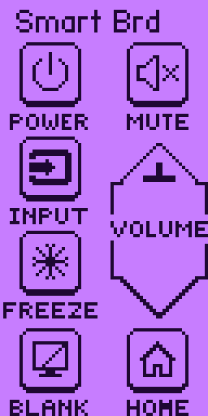

Smart board remotes
Universal remotes for interactive classroom displays: Power, Input, Mute, Volume, Freeze, Blank and Home, covering SMART, Promethean, Clear Touch, ViewSonic, Newline, BenQ, Boxlight and more. Includes a dedicated Clear Touch remote and 33 ready-made model remotes.
Only use it on displays you own or are allowed to control.